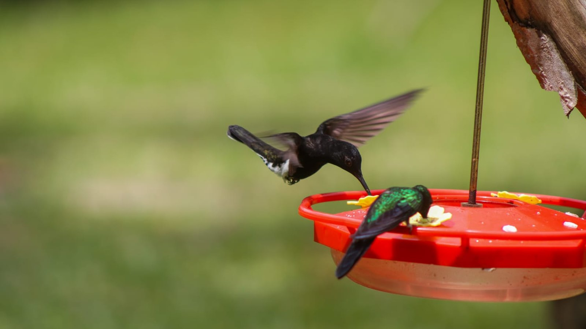
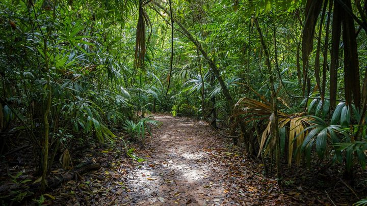

Itapema · Turismo
Itapema · TurismoNinguém se candidatou a tocar o Parque das Capivaras e o Mirante do Encanto por 30 anos, e Itapema revogou as duas concessões no mesmo dia
O parque que entra no roteiro de domingo está sem concessão desde 8 de outubro.
A FAACI abriu inscrição para o Festival do Beija-Flor 2026, de 31 de outubro a 2 de novembro, com base no Recanto do Guarapuvu. Contamos os roteiros das duas manhãs de campo: são sete sem repetir, quatro por dia, com saídas em Itapema e em Tijucas. Um deles é o Itapema Parque Capivaras, a mesma área que a Prefeitura tentou conceder por 30 anos e cuja licitação ficou deserta, com a revogação publicada em 8 de outubro, há 19 dias. A única atividade com número total de vagas publicado é a do mar: 150 lugares.
Em 30 segundos · Modo de Leitura, formato original Santa Informa
A Fundação Ambiental Área Costeira de Itapema, a FAACI, abriu inscrição para o Festival do Beija-Flor 2026.
É a 3ª edição, segundo a página de inscrição.
Acontece de 31 de outubro a 2 de novembro.
A base é o Recanto do Guarapuvu, na Rua Isidoro Luís Crispin, 4000.
A coordenação geral é da Mover Turismo.
São três dias de observação de aves.
Com saídas de campo em Itapema e em Tijucas.
Contamos os roteiros das duas manhãs.
São quatro por dia.
E sete sem repetir, porque um deles sai nos dois dias.
No sábado: Passarinhada na Reserva, Tijucas Mata, Itapema Grossa e Itapema Lagoa.
No domingo: Passarinhada na Reserva, Tijucas Praia, Itapema Trilha REVIS e Itapema Parque Capivaras.
O REVIS é o Refúgio de Vida Silvestre de Itapema.
Quem cuida dele é a própria FAACI.
Já o Parque das Capivaras, na Meia Praia, está sem definição.
A Prefeitura tentou concedê-lo por 30 anos.
Ninguém apareceu, e a licitação ficou deserta.
A revogação saiu em 8 de outubro, há 19 dias, conta nossa.
Nada publicado diz se vai sair edital novo.
As manhãs de campo começam cedo.
Concentração às 5h, nos dois dias.
Atividade das 5h30 às 10h, ou 4h30 de caminhada.
Cada grupo tem limite de 14 participantes.
A nota não diz quantos grupos cada roteiro tem.
Então o total de vagas em terra não está publicado.
A abertura é no sábado, às 14h15.
Depois vêm seis palestras, três por dia, contagem nossa.
No sábado, às 16h30, 17h10 e 18h30.
No domingo, às 14h, 14h50 e 16h10.
Uma delas trata do retorno do guará a Santa Catarina.
Com dez anos de monitoramento no litoral catarinense.
Outra é sobre aves pelágicas da costa catarinense.
Tem oficina de desenho e pintura nos dois dias.
É a Vem Passarinhar com Arte, das 14h às 16h30.
O fim é na segunda, 2 de novembro.
Com uma passarinhada em alto-mar.
Embarque das 6h30 às 7h, no Trapiche de Itapema.
No ponto de embarque do Barco Pirata.
Navegação das 7h às 14h, ou 7 horas no mar.
São 150 vagas, o único total publicado.
A ideia é ver albatrozes, pardelas, mandriões e petréis.
Os registros vão para a plataforma eBird.
No domingo, das 17h às 17h30, tem a orientação de embarque.
A inscrição é pelo Sympla.
O título da nota diz inscrições gratuitas.
Mas o texto não informa valor de nenhuma atividade.
E não diz até quando dá para se inscrever.
O festival cai num fim de semana esticado.
A Prefeitura fecha as repartições na sexta, 30.
E na segunda, 2, que é Finados.
O dia da saída em alto-mar é feriado.
Meio AmbientePublicada em Redação Santa Informa

A Fundação Ambiental Área Costeira de Itapema, a FAACI, abriu inscrição para o Festival do Beija-Flor 2026, três dias de observação de aves entre 31 de outubro e 2 de novembro. A base é o Recanto do Guarapuvu, e a coordenação geral é da Mover Turismo. Pela página de inscrição, no Sympla, esta é a 3ª edição. Contamos os roteiros de campo das duas manhãs: são quatro por dia e sete sem repetir, porque a Passarinhada na Reserva sai nos dois dias. As saídas se dividem entre Itapema e Tijucas.
No domingo saem o Itapema Trilha REVIS e o Itapema Parque Capivaras. O REVIS é o Refúgio de Vida Silvestre de Itapema, unidade de conservação que a própria FAACI administra e onde já leva estudantes da rede municipal. O Parque das Capivaras, na Meia Praia, é outra história. Em 10 de outubro contamos que a Prefeitura tentou entregá-lo à iniciativa privada por 30 anos, não apareceu uma proposta sequer e a concessão foi revogada. O extrato saiu no Diário Oficial dos Municípios em 8 de outubro, há 19 dias, conta nossa, e nada publicado diz se haverá edital novo. É nesse parque sem definição que o festival vai entrar no domingo de manhã.
Nos dois dias a concentração é às 5h e a atividade vai das 5h30 às 10h, ou 4h30 de campo. Cada grupo tem limite de 14 participantes. A nota não diz quantos grupos cada roteiro comporta, então o número total de vagas em terra não está publicado. Depois do campo vêm a abertura, no sábado às 14h15, e seis palestras, três em cada dia, contagem nossa. Uma trata do retorno do guará a Santa Catarina, com dez anos de monitoramento, e outra, das aves pelágicas da costa. Nos dois dias, das 14h às 16h30, tem a oficina de desenho e pintura Vem Passarinhar com Arte.
O festival fecha na segunda, 2 de novembro, com uma passarinhada em alto-mar. O embarque é das 6h30 às 7h no Trapiche de Itapema, no ponto do Barco Pirata, e a navegação vai das 7h às 14h, 7 horas no mar. São 150 vagas, o único total que a nota publica. A lista de espécies esperadas traz albatrozes, pardelas, mandriões e petréis, e os registros vão para o eBird. Quem embarca precisa comparecer no domingo, das 17h às 17h30, para a orientação de segurança. Para quem mora aqui, 2 de novembro é Finados, e a Prefeitura já avisou que as repartições ficam fechadas também na sexta, 30, por ponto facultativo do Dia do Servidor Público. O festival ocupa um fim de semana de quatro dias.
O resumo de 30 segundos está no topo e a versão completa é o texto acima. Aqui ficam as três leituras da casa sobre o mesmo assunto.
Clara, a otimista
Itapema vai passar o feriadão com gente de binóculo no pescoço acordando às 5h para olhar passarinho, e isso é turismo que a cidade ainda não sabe que tem. Observador de aves viaja, dorme fora, come fora e volta no ano seguinte. É a terceira edição, então alguém aqui está fazendo a conta certa há três anos.
Repare no desenho do festival. Metade dos roteiros sai em Tijucas, e as duas cidades dividem o visitante em vez de disputar. A oficina de desenho é para criança e família, de graça na porta de casa. E os registros das aves vão para o eBird, que é base pública: no fim do feriado, Itapema e Tijucas terão uma lista de espécies que não existia antes, feita por quem veio passear. Dado de graça, de quem pagou para estar aqui.
Seu Prudêncio, o criterioso
Merece atenção o que a nota não diz. O título promete inscrições gratuitas e o texto não informa valor de nenhuma atividade. São coisas muito diferentes: uma palestra à tarde e uma navegação de sete horas em alto-mar. Abrimos a página do Sympla e não achamos tabela de preço. Quem vai se programar para o feriado precisa saber quanto custa, e uma linha resolveria.
Vale acompanhar também o prazo. A nota saiu no dia 26 e o festival começa no dia 31, mas não há data limite de inscrição escrita em lugar nenhum. Com 14 pessoas por grupo, o roteiro enche rápido, e quem lê a nota não tem como saber se ainda dá tempo. Uma sugestão útil: publicar o prazo e o número de grupos por roteiro, que hoje também não aparece.
Dito isso, o que está de pé é sólido. A programação traz horário, local, ponto de embarque e nome dos palestrantes, com titulação. Há pesquisa de verdade no meio, como os dez anos de monitoramento do guará no litoral. Os registros vão para uma base pública. E o festival usa as áreas de conservação da própria cidade para o que elas servem. Para uma fundação municipal, é um programa bem montado.
Caco, o sarcástico
Concentração às 5h da manhã no sábado. Cinco. Da manhã. Tem gente em Itapema que ainda vai estar chegando em casa a essa hora, e vai cruzar na rua com o pessoal de binóculo indo embora.
E olha o roteiro do domingo: passarinhada no Parque das Capivaras. O mesmo parque que a cidade ofereceu de bandeja por 30 anos e ninguém quis. Ninguém quis o parque, mas todo mundo quer ver o que voa dentro dele. Os beija-flores não leram o edital.
Reclamação registrada. Mas tá bom porque é progresso de verdade: é de graça (acho), leva criança para desenhar bicho, divide o turista com Tijucas e ainda devolve uma lista de espécies para base pública. Tem cidade grande que no feriado só oferece engarrafamento.
Fontes: A programação está na nota FAACI promove Festival do Beija-Flor com inscrições gratuitas e experiências na natureza, da Prefeitura de Itapema, publicada em 26 de outubro de 2026 e aberta por nós em 27 de outubro. Dela saem as datas de 31 de outubro a 2 de novembro, o Recanto do Guarapuvu como base, a realização pela FAACI e a coordenação geral da Mover Turismo, os nomes dos sete roteiros, a concentração às 5h e a atividade das 5h30 às 10h, o limite de 14 participantes por grupo, a abertura às 14h15, os horários e os temas das seis palestras com o nome e a titulação de cada palestrante, a oficina Vem Passarinhar com Arte das 14h às 16h30 com o Instituto Fauna Brasil, o embarque das 6h30 às 7h no Trapiche de Itapema, a navegação das 7h às 14h, as 150 vagas da saída em alto-mar, as espécies esperadas, o envio dos registros ao eBird, a orientação de segurança no domingo das 17h às 17h30 e a fala da presidente da FAACI, Luciana Saramento. A contagem de sete roteiros sem repetir, as seis palestras, as 4h30 de campo e as 7 horas de navegação são contas nossas, feitas sobre os horários e as listas dessa mesma nota. A página de inscrição no Sympla, aberta por nós em 27 de outubro, é a fonte de que esta é a 3ª edição, do endereço do Recanto do Guarapuvu (Rua Isidoro Luís Crispin, 4000) e da Mover Turismo como organizadora. Nessa página não encontramos tabela de preços nem prazo de inscrição, apenas as regras de cancelamento, e é por isso que registramos a gratuidade como ponto em aberto. O ponto facultativo da sexta, 30 de outubro, e o fechamento das repartições na segunda, 2 de novembro, estão na nota Dia do Servidor Público: ponto facultativo será na sexta-feira em Itapema, da Prefeitura de Itapema, de 26 de outubro de 2026. A concessão deserta do Parque das Capivaras, o prazo de 30 anos, a revogação publicada em 8 de outubro e o pedido do Grupo Escoteiro Costa Esmeralda à Câmara são os que publicamos em 10 de outubro, a partir dos extratos no Diário Oficial dos Municípios. O Refúgio de Vida Silvestre de Itapema e o programa de educação ambiental da FAACI são os que publicamos em 26 de agosto. Não houve contato com a FAACI nem com a Mover Turismo até o fechamento desta matéria, e o espaço segue aberto para as duas.
Itapema · TurismoO parque que entra no roteiro de domingo está sem concessão desde 8 de outubro.

Itapema · Meio AmbienteO REVIS, que vira roteiro no domingo, e o trabalho da FAACI com as escolas.
 Costa Esmeralda · Turismo
Costa Esmeralda · TurismoComo Itapema e as vizinhas vêm tentando tocar o turismo em conjunto.